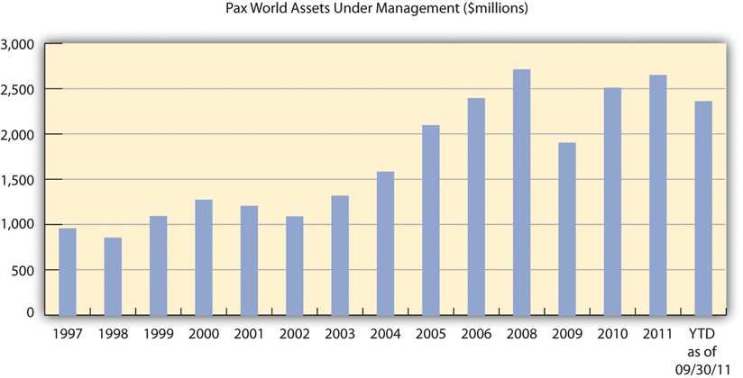

Pax World Investments, Inc., helped to start the socially responsible investing (SRI) industry that exists today. Pax World was founded in 1971 as the first socially responsible mutual fund in the United States. Two United Methodist ministers, Luther Tyson and Jack Corbett, based in Boston and Maryland, wanted to start an investment fund for their church assets that did not support the Vietnam War. They were antiwar clergy, and they specifically did not want to use church funds to invest in weapons and weapons manufacture. The ministers still cared about the financial return of the investment of the churches’ funds to help fund the operations of the churches and did not have the expertise to invest the churches’ funds themselves. They needed an investment manager who would invest their churches’ funds based on the churches’ financial and social objectives. The ministers ended up finding Tony Brown, an investment adviser based in Portsmouth, New Hampshire, which is an hour north of Boston, who was willing to work with them. Mr. Brown was, at that time, with the financial firm Fahnestock, which later became Oppenheimer Funds, and he started managing the churches’ money. It was the first social responsibility directed investment fund and later it grew to become Pax World Funds.
Pax World Funds was named to represent the social objectives of its investment fund, Pax being the name of the Roman goddess of peace and world to represent the broad global perspective of the ministers and the investment fund. The initial investors in the Pax World Fund were the two churches, private investors identified by Tony Brown, and Tony Brown himself. The total initial funds invested totaled $101,000 (about $600,000 in 2011). The first fund later became the Pax World Balanced FundCombines a stock or equity component, a bond component and sometimes a money market component in a single portfolio. Generally, these funds stick to a relatively fixed mix of stocks and bonds that reflects either a moderate (higher equity component) or conservative (higher fixed-income component) orientation. It is geared toward investors who are looking for a mixture of safety, income, and modest capital appreciation. The amounts that such a mutual fund invests into each asset class usually must remain within a set minimum and maximum., which is still in existence today. It is Pax World’s largest mutual fund accounting for more than 90 percent of its total assets under management and one of the largest SRI mutual funds in the world.
Very soon after the first Pax World mutual fund was started, the ministers got the idea that if they could screen out weapons manufacturers they could and should also screen out other things that they did not think were appropriate for church fund investment. They choose to add tobacco industry companies and firms that had a record of pollution to the list not to invest in. Social screens were new for the investment industry at the time, including for Tony Brown. Mr. Brown had to figure out a way to do the screens for the first SRI fund. He hired a recent college graduate to do the screens for the initial fund. The staffer started doing the screening as best they could from public information on companies’ products and services and business practices. There was no experience in this and very little research out about how to do this effectively, and there was only a small amount of publically available data about company social impacts. So the Pax World and the industry first social screener sorted through the industry and company data that was publically available and screened out of investments in defense and tobacco industry companies and well-known polluters.
Pax World is organized as required by federal law as a mutual fund trust company with the Securities and Exchange Commission (SEC). The fund is required to have a registered investment adviser and uses Pax World Management, LLC, as its investment adviser (the management company) for the funds. The two entities are independent but related. Pax World Funds has eight board members with the chair of the board and five of the other board members independent of Pax World Management, LLC.
Since 2005, Joe Keefe has served as president and CEO of both Pax World Funds and Pax World Management, LLC. The 75 percent owner of Pax World Management, LLC, is a holding company for the Shadek family (of New Jersey) with Larry Shadek, the lead family member and chair of the board. The family bought their ownership share of Pax World in 1996. Since 2008, Pax World Management, LLC, employees have purchased 25 percent of the company from the owners. There are four members of the board of Pax World Management, LLC, Joe Keefe, Larry Shadek, another member of the Shadek family, and Chris Brown, the Pax World, LLC, chief investment officer. Every year Pax World Management has to have their investment management contracts renewed with Pax World Funds. In order to get their contract renewed, the company has to show the fund’s board that the funds are performing well, that costs are reasonable, and that the funds are being well managed.
As of 2011, Pax World Management had forty-eight employees organized in six departments (see as follows). This included a portfolio management group headed by a chief investment officer with five (Women’s Equity, Balanced & Growth, High Yield, International, and Small Cap) fund managers, five analysts, and two traders. The sustainability research is in another department with five researchers. In addition to the portfolio management and sustainability research, the other major functional areas are compliance, finance and administration, shareholder services, and marketing and sales. Compliance involves being in accordance with established guidelines, specifications, and agreements with customers and shareholders.
As of 2011, Pax World Funds had eleven mutual funds and two exchange traded funds (ETFs) with assets under management totaling $2.4 billion. The Balanced Fund was started in 1971. The Growth Fund and the High Yield Bond Fund were started in late 1990s. The newest funds were the ESG Managers Portfolios, ESG Shares (ETFs), Pax World Small Cap Fund, Pax World International Fund, Pax World Global Women’s Equality Fund, and Pax World Global Green Fund.
Figure 12.1 Pax World Assets under Management (in Millions of Dollars)
*As of September 30, 2011.
Source: Image courtesy of the authors.
Overall Pax World offers four different investment products areas:
Pax World Funds—a family of actively managed mutual funds across a range of asset classes.
Pax World’s largest fund, their Balanced Fund, is the oldest SRI fund in the industry. It is the second-largest single SRI fund (at $1.8 billion) after the Parnmassus Equity Income Fund ($3.7 billion) as of September 30, 2011.“Socially Responsible Mutual Fund Charts: Financial Performance,” USSIF, http://ussif.org/resources/mfpc.
Pax World’s Balanced Fund has a $250 minimum investment requirement and an expense ratio of 0.96 percent. As of September 30, 2011, compared to the overall market (S&P 500), Pax World’s largest fund has tended to underperform in the short term but outperform over the longer term. When compared to just other balanced funds (the Lipper Balanced Funds Index), the fund has tended to underperform financially at times.
Table 12.2 Comparison of Pax World Balanced Fund to Comparable Investment Benchmarks
| Total Returns » Month Ended September 30, 2011 » Quarter Ended September 30, 2011 | Cumulative Returns (%) | Average Annual Returns (%) | ||||||
|---|---|---|---|---|---|---|---|---|
| 1-Month | Quarter | Year-to-Date | 1 Year | 3-Year | 5-Year | 10-Year | Since Inception | |
| Balanced Fund—Individual Investor Class | –7.92 | –13.77 | –8.90 | –1.04 | 0.98 | –0.34 | 3.24 | 8.14 |
| Balanced Fund—Institutional Class 1 | –7.89 | –13.69 | –8.71 | –0.74 | 1.23 | –0.11 | 3.36 | 8.17 |
| Balanced Fund—R Class 2 | –7.93 | –13.78 | –9.04 | –1.23 | 0.73 | –0.53 | 3.14 | 8.11 |
| 60% S&P 500 Index / 40% Barclays Capital US Aggregate Bond Index | –3.93 | –7.04 | –2.65 | 3.05 | 4.44 | 2.25 | 4.29 | — |
| S&P 500 Index | –7.03 | –13.87 | –8.68 | 1.14 | 1.23 | –1.18 | 2.82 | — |
| Lipper Balanced Funds Index | –5.36 | –9.62 | –5.41 | 0.30 | 3.94 | 1.53 | 4.13 | — |
| Pax World Balanced Fund—Individual Investor Class | –7.92 | –13.77 | –8.90 | –1.04 | 0.98 | –0.34 | 3.24 | 8.14 |
| 60% S&P 500 Index / 40% Barclays Capital US Aggregate Bond Index | –3.93 | –7.04 | –2.65 | 3.05 | 4.44 | 2.25 | 4.29 | — |
| S&P 500 Index | –7.03 | –13.87 | –8.68 | 1.14 | 1.23 | –1.18 | 2.82 | — |
| Lipper Balanced Funds Index | –5.36 | –9.62 | –5.41 | 0.30 | 3.94 | 1.53 | 4.13 | — |
According to Morningstar, one of the leading providers of independent investment research in the world, in the eleven years from 2000 to 2011 Pax World’s Balanced Fund performed in the top quartile among all (not just SRI) funds in its category five of the year, in the bottom quartile five of the years, and in the second lowest quartile in one year.
A significant challenge for Pax World has been to attract investors to their fund. Wall Street and the traditional investment marketplace were at first skeptical of social screens and SRI in general. The Wall Street perspective was that social screens “shrink” the investment universe by screening out investment opportunities based on values—such as not investing in companies with poor environmental records—rather than on financial performance. It was believed that it was far more difficult for SRI funds to achieve strong market performance in terms of returns on investments, capital gains, and investment income. This pervasive perception was the biggest early barrier SRI.
The performance over time of the SRI funds compared to the universe of funds has convinced increasing numbers of investors. At the end of 2009, a review of 160 socially responsible mutual funds found that 65 percent of the funds outperformed their benchmarks—funds with similar investment objectives—and a United Nations Report concluded, “There is mounting empirical evidence that companies with better corporate governance practices carry less risk and outperform poorly governed companies over time; that companies with strong environmental performance carry less risk and outperform environmental laggards over time; that companies with good workplace practices enjoy higher productivity, higher morale, lower turnover and increased profitability.”UNEP Finance Initiative, Show Me the Money: Linking Environmental, Social and Governance Issues to Company Value (Geneva, Switzerland: United Nations Environment Programme, 2006).
Pax World experienced its own internal challenge in regards to ethics and social responsibility. On July 30, 2008, the SEC fined Pax World Mutual Funds $500,000 because it failed to follow its own SRI criteria from 2000 to 2005. The settlement between Pax World and the SEC concluded an investigation that had commenced in December 2004, prior to CEO Joe Keefe’s arrival at the company. Pax World’s funds had invested in some of the kinds of companies they were supposed to avoid. For example, the Pax Growth Fund owned shares of a major oil and gas exploration company, even though it had failed three of Pax’s social screens. And the Pax High Yield Fund owned bonds issued by a company that had major revenue from gambling and liquor. The SEC found Pax had violated its own restrictions by purchasing at least ten securities that screening criteria prohibited; in addition, Pax failed to screen 8 percent of its new security purchases between 2001 and 2005. Continuously from 2001 through early 2006, the Pax Growth Fund and the Pax High Yield Fund held at least one security that violated criteria. All told, the fund company held forty-one securities that either weren’t screened or didn’t pass its screens.Mark Jewell, “Pax Fined for Failure to Screen Investment Funds,” USA Today, July 30, 2008, http://www.usatoday.com/money/economy/2008-07-30-1549841276_x.htm.
The following comments were made by some of the people involved in the incident:
“Mutual fund companies marketing socially responsible funds need to be responsible themselves,” said David Bergers, regional director of the SEC’s Boston office.
“Advisers simply cannot tell investors they are going to do one thing with their funds and then not follow through on those promises,” said Linda Chatman Thomsen, director of the SEC Division of Enforcement, in a statement.
Pax World Management Corporation, the then investment adviser to Pax World Funds and predecessor to Pax World Management, LLC, the reorganized management company, entered into a settlement order with the SEC dated July 30, 2008. Under the terms of the settlement, Pax World agreed to a cease and desist order and a civil penalty of $500,000 under Section 206(2) of the Investment Advisers Act, which is a section involving negligent conduct, not intentional wrongdoing.
Pax World, under the leadership of Joe Keefe, undertook a vigorous response, and the SEC chose to recognize Pax World’s substantial remediation efforts and cooperation in its order. In addition, the Pax World Balanced Fund, which held approximately 95 percent of Pax World assets during this time period, did not purchase any unscreened securities and was not cited in the order.
The portfolio managers of the two funds involved—the Growth Fund and the High Yield Fund—as well as the head of the social research department and Pax World’s outside counsel and chief compliance officer all left the firm. Pax World completely overhauled its compliance procedures to ensure that its portfolio managers can only buy securities that have passed their social and environmental criteria. As part of a top-to-bottom reorganization and modernization of their business operations, Pax World put in place new sustainability screening and other compliance procedures, controls, and technology.
In a 2011 interview, CEO Joe Keefe said of the mistakes made, “I can tell you that today Pax endeavors to meet best practices in all aspects of our business and operations. And we have a compliance culture that I would match up against any in the industry. Like all companies (and all individuals) we are not perfect, but we learn from our mistakes, are proud of the progress we have made and are constantly striving for improvement.”